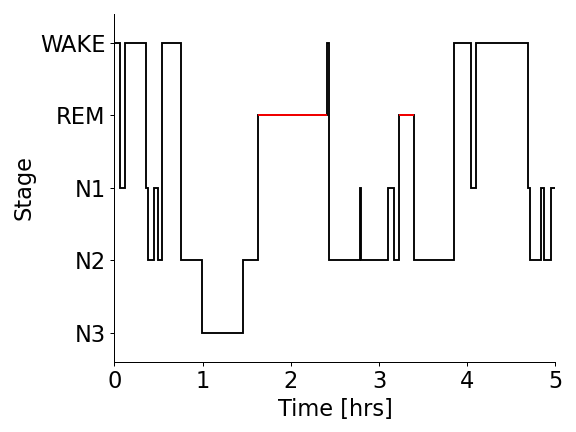

yasa.plot_hypnogram¶
-
yasa.plot_hypnogram(hypno, sf_hypno=0.03333333333333333, lw=1.5, figsize=9, 3)[source]¶ Plot a hypnogram.
New in version 0.6.0.
- Parameters
- hypnoarray_like
Sleep stage (hypnogram).
Note
The default hypnogram format in YASA is a 1D integer vector where:
-2 = Unscored
-1 = Artefact / Movement
0 = Wake
1 = N1 sleep
2 = N2 sleep
3 = N3 sleep
4 = REM sleep
- sf_hypnofloat
The current sampling frequency of the hypnogram, in Hz, e.g.
1/30 = 1 value per each 30 seconds of EEG data,
1 = 1 value per second of EEG data
- lwfloat
Linewidth.
- figsizetuple
Width, height in inches.
- Returns
- ax
matplotlib.axes.Axes Matplotlib Axes
- ax
Examples
>>> import yasa >>> import numpy as np >>> hypno = np.loadtxt("https://github.com/raphaelvallat/yasa/raw/master/notebooks/data_full_6hrs_100Hz_hypno_30s.txt") >>> ax = yasa.plot_hypnogram(hypno)
